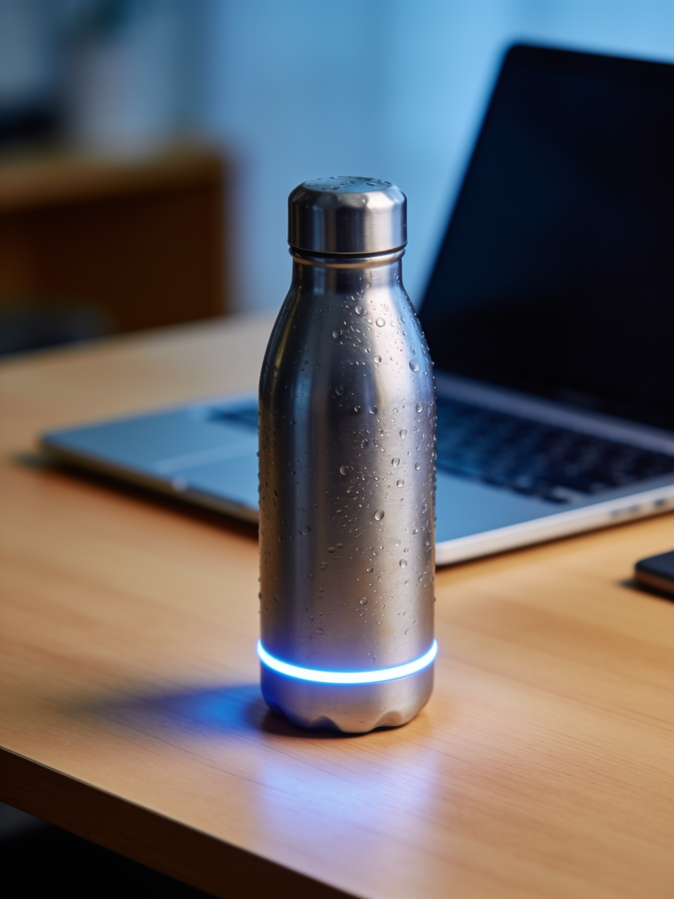

Smart Water Bottles Are Mostly Gimmicks — Except for One Feature
The HydraSync 2 wants to coach your hydration. Most of it is noise, but one feature kept us refilling.

The pitch for the $79 HydraSync 2 is that you are bad at drinking water and a Bluetooth bottle can fix you. It tracks every sip, syncs to an app, calculates a personalized hydration goal from your weight and the weather, awards streaks, and — when you fall behind — pulses a soft ring of light on its base.
After six weeks, we can report that roughly one sentence of that pitch matters.
The tracking is real, the precision is not
The HydraSync measures intake with a sensor in the lid, and directionally, it works: drink a lot and the app shows a lot. But when we measured actual versus reported intake across two weeks of use, the bottle over- or under-counted by an average of 14%, with one 700ml day recorded as 460ml. For a device whose entire premise is measurement, that's a lot of drift. Hydration apparently resists precision when it happens in sips, swigs, and half-finished pours into a gym cup.
The app compounds this with the usual wellness-app inflation: streaks, badges, a "Hydration IQ" score we never decoded, and notifications that began to feel like a needy tamagotchi by week two. We disabled them on day eleven.
The glow ring, however, works
Here's the surprise. The HydraSync's base pulses gently when you haven't drunk in a while — no sound, no phone involvement, just a slow amber glow at the edge of your vision. And it turns out that a literal glowing object on your desk is a spectacularly effective nudge in a way a phone notification, buried among forty others, is not.
Both testers drank measurably more during the test — roughly 20% by the bottle's own (admittedly fuzzy) accounting, and "noticeably more" by the cruder metric of refill counts. Both attributed essentially all of it to the ring. Neither opened the app after the first two weeks.
As a bottle, it's genuinely good
Strip the electronics away and the HydraSync 2 is a well-made 24oz vacuum-insulated bottle: it kept ice water below 50°F for 22 hours in our test, the lid seals reliably (it survived a full day upside-down in a backpack), and the charge lasted around 18 days. The catch: the lid's sensor module means it's hand-wash only, and the replacement lid costs $29 if you lose or break it.
Should you buy it?
If a glowing reminder genuinely appeals to you — and our testing suggests it should appeal to more people than would admit it — the HydraSync 2 is the rare smart bottle whose one good idea survives contact with daily life. If you'd just be buying it for the tracking and the app, save $45 and buy a good dumb bottle, because the smart half of this product is the half you'll turn off.
Pros
- Glow-ring reminders genuinely change behavior
- Excellent insulation and leak-proof lid
- Nearly three weeks of battery per charge
Cons
- Sip tracking drifts up to 14% from reality
- App is notification-heavy gamification theater
- Hand-wash only; pricey replacement lid